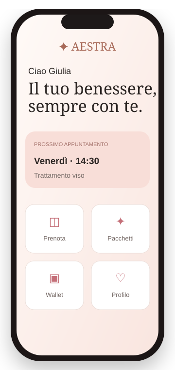

IL SISTEMA OPERATIVO DELLA BELLEZZADirigi il tuo centro.
Dirigi il tuo centro.
AESTRA coordina tutto.
Agenda, clienti, team, marketing, magazzino e numeri in un unico sistema. Daphne interpreta ciò che accade e ti suggerisce dove intervenire.

Daphne sta analizzando il centro3 opportunità · 2 clienti da recuperare · 1 spazio da ottimizzare

DaphneDigital AESTRA SpecialistOsserva · interpreta · suggerisce

✦ 3 opportunità individuate
↗ agenda ottimizzata
LA PIATTAFORMATutto ciò che serve.
Tutto ciò che serve.
Nel momento in cui serve.
AESTRA raccoglie il lavoro quotidiano del centro in un’unica esperienza: semplice da usare, completa da dirigere, intelligente nel suggerire.
Ogni appuntamento, perfettamente coordinato.
Operatori, cabine, risorse, liste d’attesa e prenotazioni online.
Ogni relazione, finalmente leggibile.
Beauty Journey, preferenze, storico e valore del cliente.
Ogni decisione, guidata dai dati.
Fatturato, marginalità, performance e previsioni.
IL VALORE AGGIUNTODaphne non è un modulo.
Daphne non è un modulo.
È l’intelligenza dentro AESTRA.
Osserva come lavora il centro, interpreta ciò che accade e porta in superficie ciò che merita attenzione.
- Individua clienti da recuperare
- Trova opportunità nell’agenda
- Segnala cali e anomalie
- Suggerisce azioni concrete
✦ Daphneonline
Ho analizzato la giornata e trovato una nuova opportunità.
PARLA CON DAPHNE
Non guardare soltanto AESTRA.
Non guardare soltanto AESTRA.
Provalo attraverso Daphne.
Raccontale come lavora il tuo centro. Daphne costruirà una prima lettura operativa e aggiornerà la dashboard davanti ai tuoi occhi.
✓ Analisi guidata in meno di due minuti
✓ Risposte personalizzate sul tuo centro
✓ Dashboard aggiornata in tempo reale
CENTRO IN ANALISI
Il tuo centro
Daphne online
✦
PRIMA LETTURA DI DAPHNE
Dimmi qualcosa del tuo centro e inizierò l’analisi.
✦
DaphneDigital AESTRA Specialist
online